1Department of Mechanical and Electro-Mechanical Engineering, National Sun Yat-sen University
2Department of Materials and Optoelectronic Science, National Sun Yat-sen University
TL;DR: IM2PROP is a tri-branch network that predicts the Micro-Vickers hardness of duplex stainless steel from optical micrographs; its best configuration lowers cross-validated error by 12.7% against an RGB-only baseline.
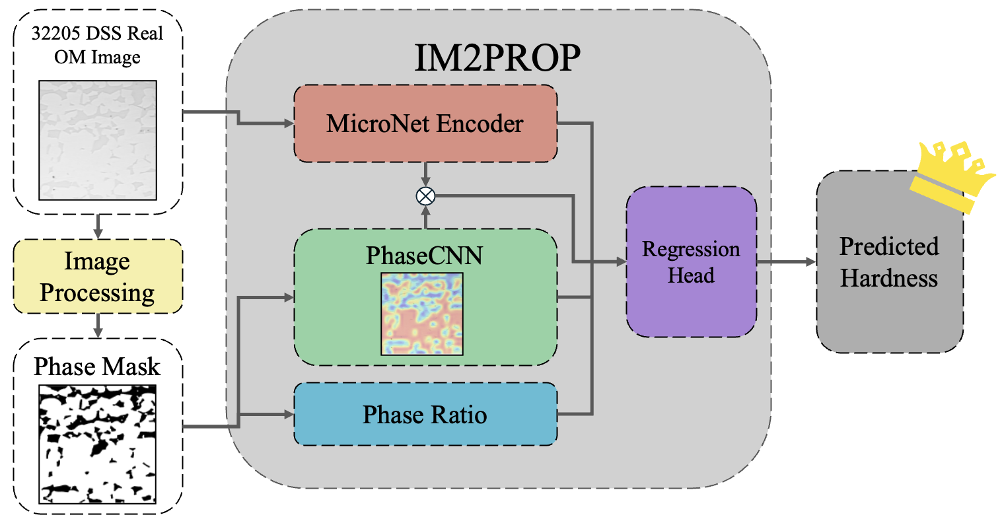
Predicting local mechanical properties from microstructural images is essential for reducing the experimental burden in materials development, yet existing deep learning approaches predominantly rely on synthetic training data, while domain-specific pretraining remains underexplored for image-based property regression. IM2PROP is a tri-branch regression framework that predicts the Micro-Vickers hardness of S32205 duplex stainless steel directly from real optical micrographs, fusing a MicroNet-pretrained ResNet50 encoder, a phase-driven spatial attention mechanism derived from binary phase masks, and macroscopic phase ratios. Its 94 samples are cropped with the expanding cavity model, so each image covers the plastic zone the indent actually deformed. A full-factorial ablation evaluated with 5-fold cross-validation over 360 training runs shows that the best configuration reaches a mean absolute error of 0.175 GPa, 12.7% below the RGB-only baseline.
A hardness value describes only the material the indent deformed, so each micrograph is cropped to that region. The expanding cavity model of Mata et al. treats the indentation as a spherical cavity inflating in an elastic–perfectly-plastic solid, which turns the indent’s two measured diagonals into the radius of its plastic zone at the surface. Averaged over all 94 indents that radius is 121 µm, so every sample is a 720 × 720 px square centred on the indent, large enough to hold the whole zone. The micrographs deliberately leave out the indent itself, whose size alone would give away the hardness. The steps below follow Appendix A of the paper for one representative indent.
Six image-processing stages — median denoising, background normalization, CLAHE contrast enhancement, Otsu binarization, morphological refinement and small-region filtering — turn each micrograph into a binary map of its two phases. The mask feeds the PhaseCNN branch, and its pixel counts give the phase ratios. The three specimens below sit at the low, typical and high end of the austenite fraction; drag any divider to compare all three.
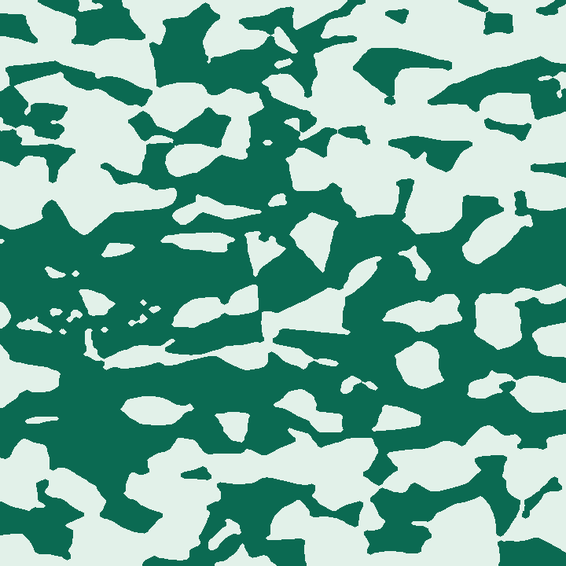
Micrograph Mask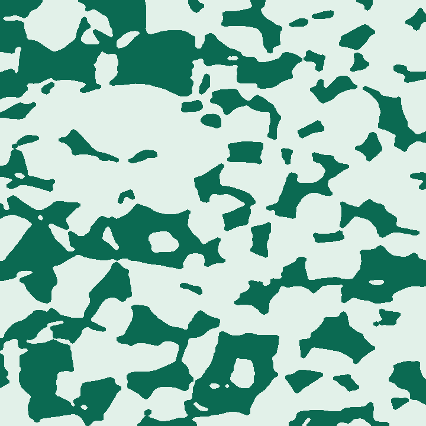
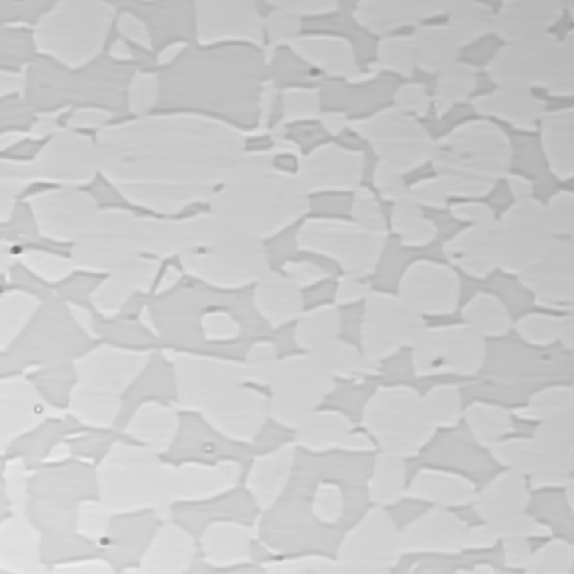
Micrograph Mask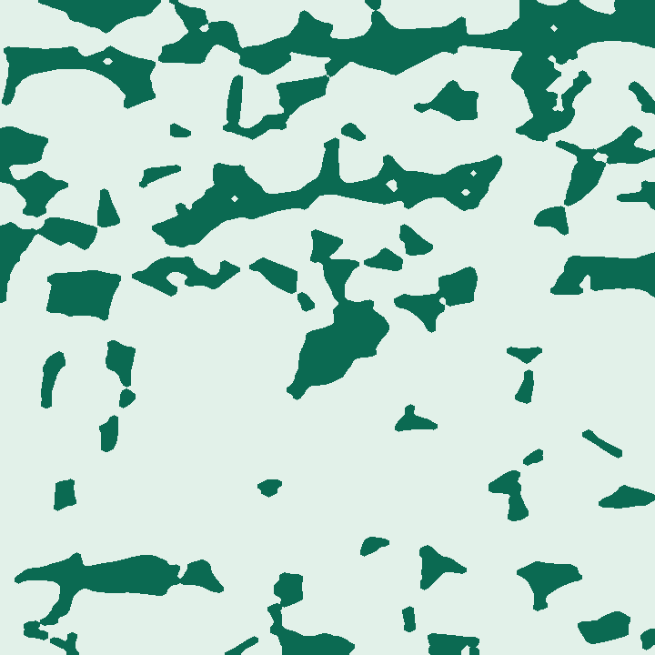
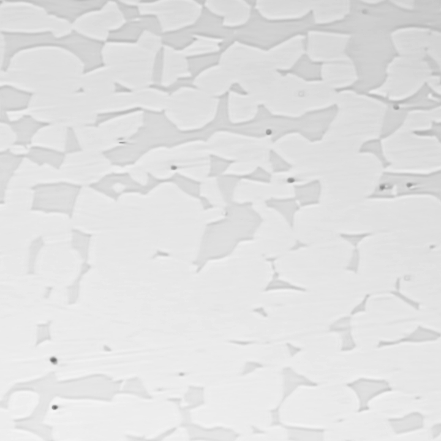
Micrograph Maskaustenite (FCC, light phase) ferrite (BCC, dark phase)
Three branches read the same specimen at different scales. Three components can be switched off independently — phase ratios (R), phase attention (A) and PhaseCNN features (F) — while the rest of the network stays identical: a disabled branch is zeroed rather than removed, and a disabled attention gate passes the encoder’s features through unchanged. That gives the eight configurations in the results.
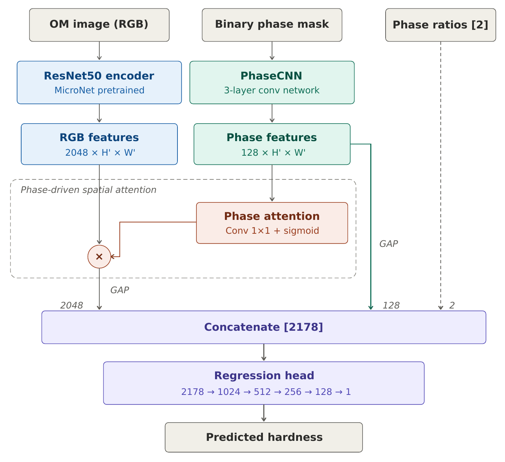
MicroNet encoder. A ResNet50 pretrained on micrographs and kept frozen; 2048-d RGB features.
PhaseCNN (F). Three convolution layers on the phase mask; 128-d phase features.
Phase attention (A). A 1×1 convolution and sigmoid that re-weights the encoder’s feature map.
Phase ratios (R). Austenite and ferrite fractions; 2-d.
Fusion. Concatenated to 2178-d and mapped to hardness in GPa by a five-layer head.
The phase-attention gate turns the PhaseCNN’s reading of the phase mask into a map between 0 and 1 that re-weights the encoder’s features. Each slide puts that map beside the micrograph it was computed from. The three specimens have the lowest, median and highest measured hardness among the 19 held-out specimens of one cross-validation fold of the best configuration (Combo 4, 80 epochs), and each map’s colors are stretched to its own range, so compare regions within a slide rather than across slides.
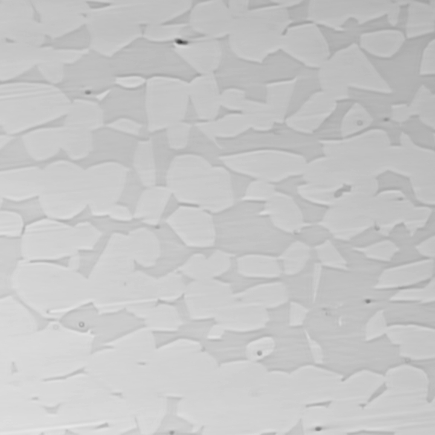
Micrograph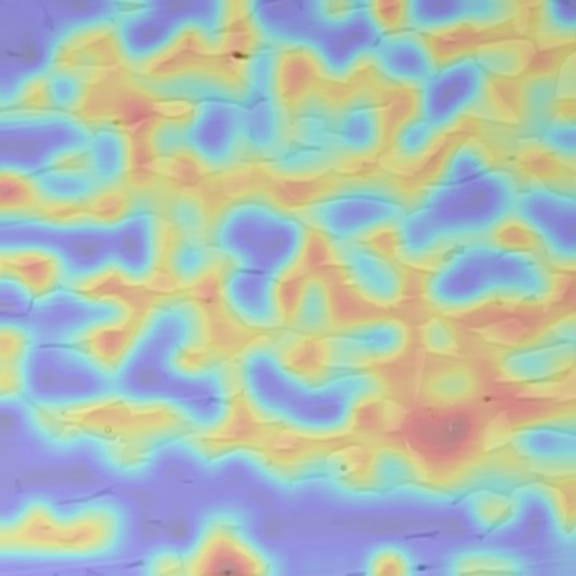
Phase attention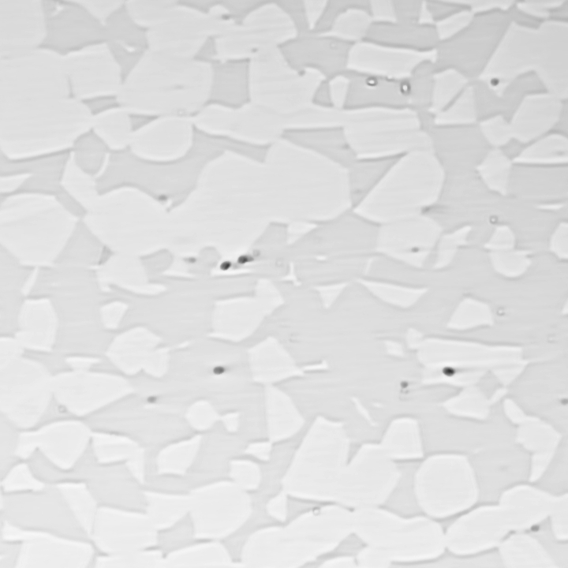
Micrograph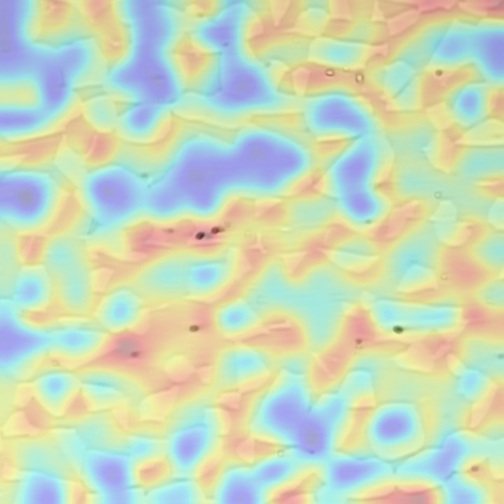
Phase attention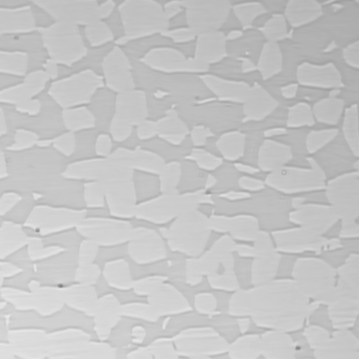
Micrograph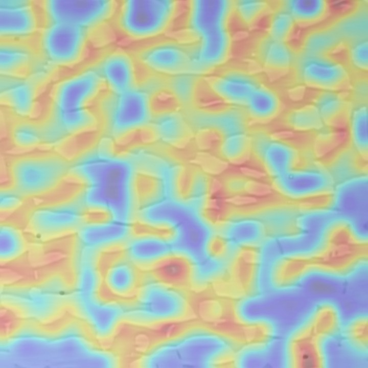
Phase attentionLowHigh attention
Mean absolute error in GPa from 5-fold cross-validation repeated three times, pooled over all 94 specimens. Lower is better.
| # | Configuration | R | A | F | 30 epochs | 50 epochs | 80 epochs |
|---|---|---|---|---|---|---|---|
| 1 | Baseline (RGB only) | off | off | off | 0.2312 | 0.2227 | 0.2011 |
| 2 | + Phase features | off | off | on | 0.2378 | 0.2197 | 0.1933 |
| 3 | + Attention | off | on | off | 0.2034 | 0.2192 | 0.2261 |
| 4 | + Attention + phase features | off | on | on | 0.1872 | 0.2166 | 0.1754 |
| 5 | + Phase ratios | on | off | off | 0.2000 | 0.1828 | 0.1827 |
| 6 | + Ratios + phase features | on | off | on | 0.2335 | 0.2275 | 0.2272 |
| 7 | + Ratios + attention | on | on | off | 0.2030 | 0.2241 | 0.1760 |
| 8 | Full IM2PROP | on | on | on | 0.1949 | 0.2024 | 0.1807 |
R phase ratios A phase attention F PhaseCNN features
Lowest error: + Attention + phase features at 80 epochs, 0.1754 GPa — 12.7% below the RGB-only baseline at the same setting (0.2011 GPa).
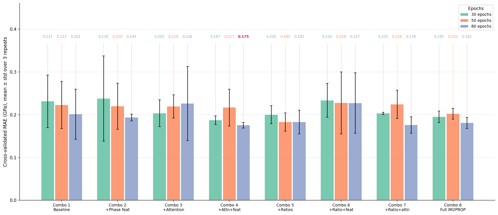
One script recomputes every number in the results table, and the chart, from the 94 source images — about 15 hours on a single CUDA GPU, or about 5 with --repeats 1. Full instructions are in the README.
git clone https://github.com/JayChou04/IM2PROP.git
cd IM2PROP && uv sync
bash reproduce.shThe latest version lives in the GitHub repository and is updated as the work evolves.
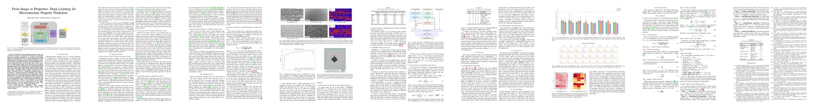
@unpublished{chou2026im2prop,
title = {From Image to Properties: Deep Learning for
Microstructure Property Prediction},
author = {Chou, Shih-Chieh and Cheng, I-Chieh and Li, Bo-Shiuan},
note = {Manuscript},
year = {2026},
url = {https://jaychou04.github.io/IM2PROP/}
}
Supported by the College Student Research Grant, National Science and Technology Council (NSTC), Taiwan, under Grant No. 114-2813-C-110-052-E.
Page design inspired by Zip-NeRF, BakedSDF, Adaptive Compliance Policy and ZipMap.